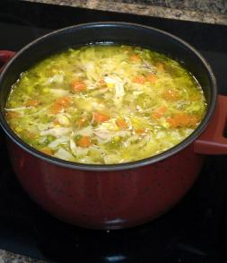

Nana's Homemade Chicken Noodle Soup
Home
More Recipes
About Us
Contact Us

Directions
- Chop up all of the veggies to your choosing. Include, Celery and Carrots. Other vegitables are opptional.
- Grab a pot and pour in two containers of the Natures Promise Chicken Broth.
- Fill the two empty containers with water, then pour the water into the pot.
- Add some salt and pepper to the soup along with some Italian Seasoning.
- Place the soup over medium heat.
- In a seperate pan, bring water to a boil.
- Slice the chicken breast down the middle, then dice up the thin strips.
- place chicken into the boiling water, and remove when white. When white, place into the broth to finish cooking with the soup.
- Place the cut up vegitables into the soup.
- Bring the soup to a boil, then reduce to medium heat to finish cooking. Soup should be done in 1 hour and 30 minutes.
- Add your choice of pasta into the soup 15 minutes before done. one half cup to one cup should be enough.
- Enjoy your soup!
Back to Ingredients
Page created by Tori Joyce